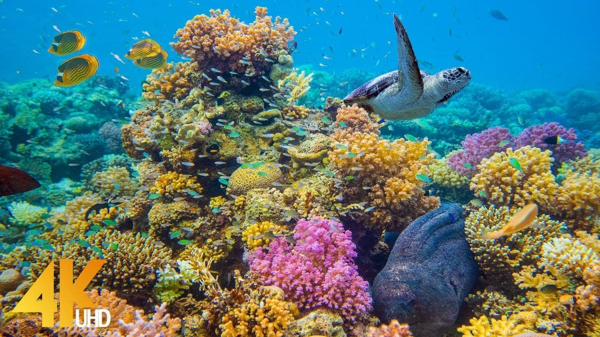

The Ocean

The ocean is the connected body of salty water that covers 70.8% of the Earth's surface. The sea moderates the Earth's climate and has important roles in the water cycle, carbon cycle, and nitrogen cycle. Although the sea has been travelled and explored since prehistory, the modern scientific study of the sea—oceanography—dates broadly to the British Challenger expedition of the 1870s. The sea is conventionally divided into four or five large sections, such as the Pacific, called oceans while smaller sections, such as the Mediterranean, are known as seas.
Owing to the present state of continental drift, the Northern Hemisphere is now fairly equally divided between land and sea (a ratio of about 2:3) but the South is overwhelmingly oceanic (1:4.7). Salinity in the open ocean is generally in a narrow band around 3.5% by mass, although this can vary in more landlocked waters, near the mouths of large rivers, or at great depths. About 85% of the solids in the open sea are sodium and chloride. Deep-sea currents are produced by differences in salinity and temperature. Surface currents are formed by the friction of waves produced by the wind and by tides, the changes in local sea level produced by the gravity of the Moon and Sun. The direction of all of these is governed by surface and submarine land masses and by the rotation of the Earth (the Coriolis effect).